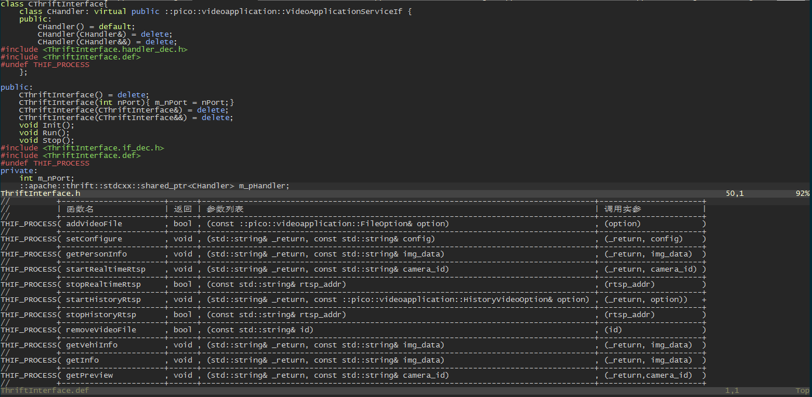

好吧。之前有人改我这部分代码的时候因为thrift接口有变更，所以setter部分都要更新。然后偷懒复制粘贴，几个细节没改导致调用一直有问题，排查了好久才发现问题。
其实早就想把这部分改掉了，但是接口一直没变动也就没改了。这次接口有所改动，所以就一起改掉了。
一开始的思路是，毕竟是C艹嘛，看看能不能用模板来解决这个问题。不过接口在thrift里面都是虚函数，想用模板直接实现不太可行。剩下就只有想看用宏能不能搞定了。
C的宏只做替换做起来要难得多，要是Rust的宏就简单多了。
实现的思路是。专门一个文件打表，做成类似DSL的形式。在需要扩展的时候用#include的形式引入表格，宏展开为需要实现的代码。需要展开为不同代码的时候用不同的宏定义来控制。
一开始是用可变宏参数列表来做。形如
// ThriftInterface.def
THIF_PROCESS(getInfo, void, std::string& _return, const std::string& img_data)
// ThriftInterface.handler_dec.h
THIF_PROCESS(funcName, retType, ...) \
retType funcName(__VA_ARGS__) { \
return m_func##funcName(__VA_ARGS__); \
}
但是很快就发现问题了。宏传入的参数列表是包含参数类型的，在生命函数的时候需要参数类型，但是调用的时候需要传入实参。
这样那句return m_func##funcName(__VA_ARGS__);语法上就有错误。
要修正这个问题需要把__VA_ARGS__里面的各个值分隔，提取出参数名部分。用宏实在是做不到。
最后的解决办法是。把参数列表用括号打包，当成一个参数。实参另外打包作为一个新的参数。这样就把问题解决了。
实际代码看起来就像这样：

@